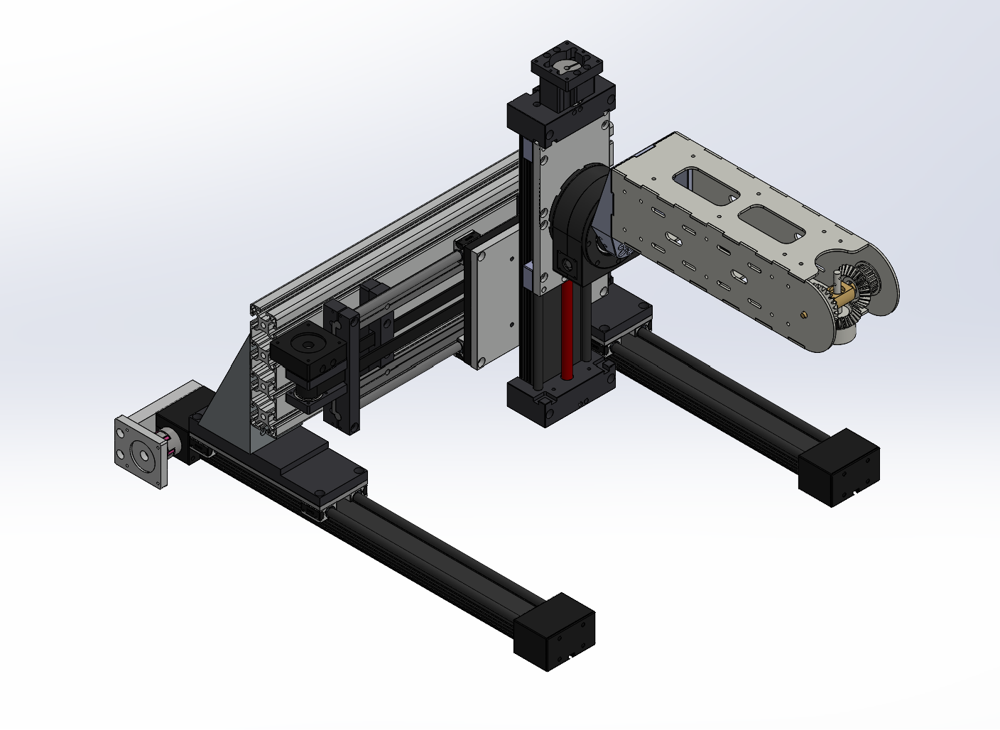
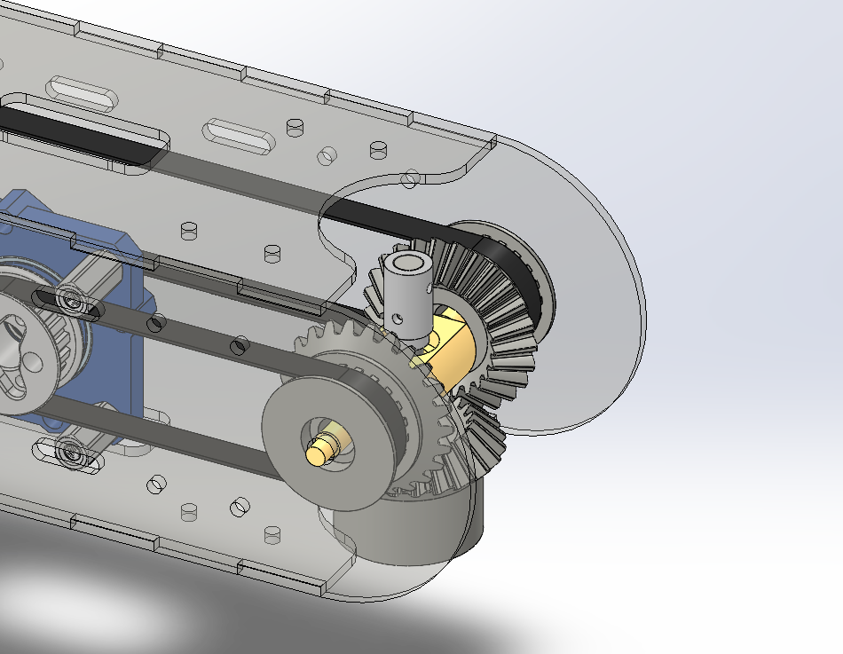
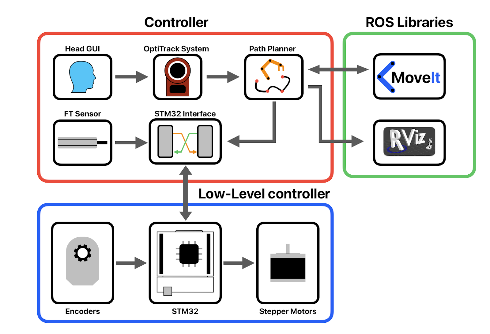
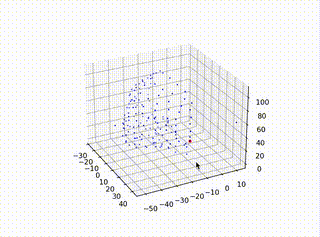

EE106A Fall 2023 Final Project
Group 35 - MRI Robot
David Guo, Nai Chen Zhao, Wesley Jiang, Cedric Murphy, Charles Paxson
Introduction
Transcranial Magnetic Stimulation (TMS) is a procedure that uses powerful magnetic fields emitted from a handheld coil to stimulate certain areas of the brain. It has been found to have positive effects on patients with depression and obsessive-compulsive disorders.
However, the exact biology of TMS is not very well understood. Our robot is intended to help study TMS and its effects on the brain by allowing it to be conducted repeatably within an MRI machine, so imagery can be taken immediately following the stimulation.
Since this robot will be able to function around an MRI machine, it could be used for other research and procedures relating to the brain.
Design
Our robot must be able to move a TMS coil into light contact with a human head, within an MRI machine.
In doing so, it must be reliable, safe, and easy for the therapist conducting TMS to control.
Since this robot will work within an MRI machine, it cannot have any ferromagnetic materials. However, this project is simply a prototype to test the overall architecture, so there are several ferromagnetic components
Hardware
Design Overview
We designed a 6-axis robot, composed of two main assemblies: a 3 axis Cartesian gantry, and a 3 axis rotating end effector.
The rotating end effector then has two parts: a rotation joint and a two-axis differential wrist joint. We use this differential joint instead of discreetly actuating the pitch and yaw axes to make one motor move less, and to make the end effector more compact.
Each of the prismatic joints is belt-driven directly by the stepper motors.
The rotating joint (roll) connecting the gantry to the wrist has a worm drive.
The wrist joint has 2 axes, each driven by a pancake stepper motor with a 15:1 3D printed cycloidal drive. These drives have custom bearings with nylon balls running in 3D printed races.
These drive timing belts that move the two sides of a bevel gear differential, upon which is mounted our force/torque sensor and end effector.
Design Choices and Trade-offs
When we began this project, the Cartesian gantry had already been bought, and unfortunately its range of motion was rather lacking. We had to offset the wrist joint from the rotation joint to give us a usable reachable workspace that would let us reach either side of an adult human's head. We also had to cut down the workspace, so the arm can only either reach the front half of a person's head, and the back half, with the patient simply be turned over on the tray to reach the other side.
Additionally, the gantry we ultimately received lacked a couple of key components, most importantly the rotation joint. It was shipped later, but it did not have any kind of motor mount, so we just designed our own.
Finally, we got a prototype of the wrist arm made of acetal, and we noticed that with the NEMA 23 motors we originally planned to use, that bending was a concern. To solve this, we remade the wrist arm with acrylic, and designed 3D printed cycloidal drives that would allow us to use 50mm pancake stepper motors instead that were much lighter.
Electrical
Since we are just working on a prototype, we decided to drive our robot with stepper motors, since they are precise and easy to use.
To make the wiring between the encoders, motor drivers, and microcontroller simpler, we designed a custom PCB with a socket to directly plug in the STM32 Nucleo microcontroller. It manages power conversions from 12V to 5V and 3.3V. It greatly simplifies wiring and minimizes harnessing issues. Each stepper motor can be disabled separately with SPST switches on the right.
Implementation
Hardware
blah
Electrical
blah
Software
blah
Head GUI
A python GUI allows a user to select head zones. This ran independently of RVIZ. Not all points on the head are selectable since the back half is unreachable. An even point density cloud was achieved with voxel down-sampling. The GUI transforms the head normal vectors and points to the world frame and publishes them.
 Point cloud data shown with Plotly.js instead of Matplotlib we're using with ROS.